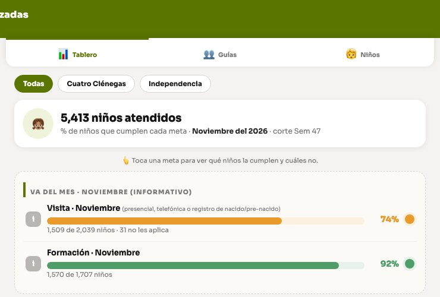
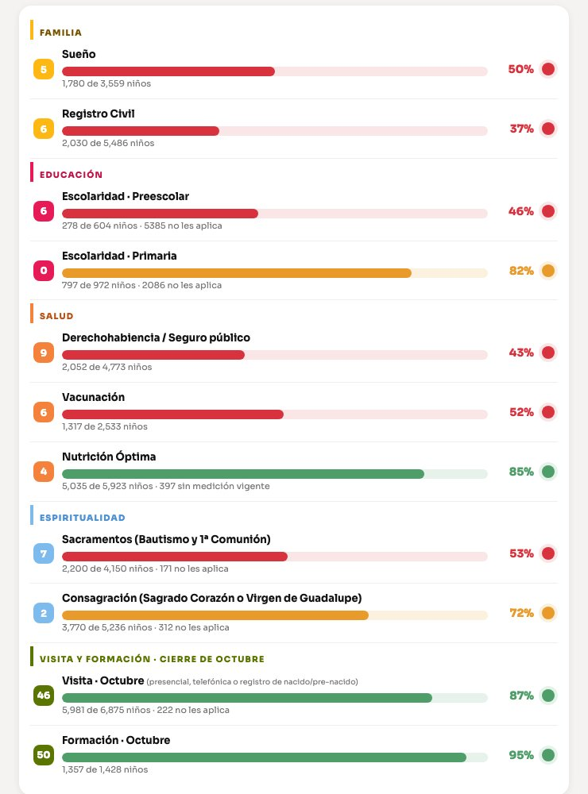
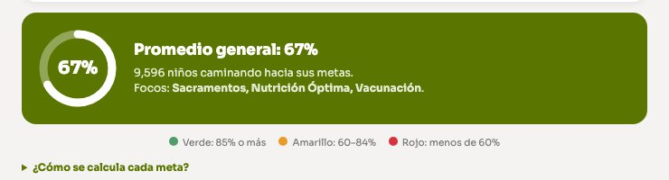

Manual del Tablero de Metas
Qué porcentaje de los niños cumple cada meta del Plan, y quiénes la cumplen y quiénes no: cómo se calcula y cómo leer cada vista.
1¿Para qué sirve?
El Tablero responde qué porcentaje de los niños cumple cada meta del Plan, y quiénes la cumplen y quiénes no. Tiene tres vistas: el Tablero con todas las metas, Guías con el avance de cada guía en la semana, y Niños con el cumplimiento de cada niño.
Sirve para decidir en qué meta enfocarse y con qué guía o niño empezar.
2¿De dónde viene la información?
3Cómo moverte en el reporte

- Tablero · Guías · Niños: las tres vistas del reporte.
- Todas · Cuatro Ciénegas · Independencia: elige la comunidad.
- Niños atendidos: cuántos niños entran al cálculo, el mes y la semana de corte.
- Toca una meta para ver qué niños la cumplen y cuáles no.
- Hasta abajo, «¿Cómo se calcula cada meta?» explica quién entra y qué cuenta como cumplido.
4El semáforo
Cada barra se pinta según su porcentaje. En las vistas de Guías y Niños, el 100 % aparece aparte para distinguir a quien ya cumplió todo.
5Las metas, una por una
Cada niño se califica solo en las metas que le aplican por edad y religión.
| Meta | Se cumple cuando… |
|---|---|
| Va del mes (informativo) | |
| Visita del mes | El niño tiene visita presencial, telefónica o registro de nacido o pre-nacido, localizada, en el mes. No aplica a familias bimestrales que no tocaban ese mes. |
| Formación del mes | El niño o su familia recibió al menos un tema formativo en una visita localizada en el mes. |
| Familia | |
| Sueño | Tiene «Mi sueño» capturado en el CRM. |
| Registro civil | Registro civil = Sí. |
| Educación | |
| Escolaridad · Preescolar | Está cursando, preinscrito o confirmado. Aplica de 3 a 5 años cumplidos al 31 de diciembre del año en que empezó el ciclo (regla SEP). |
| Escolaridad · Primaria | Igual que Preescolar, para niños de 6 a 11 años. |
| Salud | |
| Derechohabiencia | Tiene seguro médico registrado. |
| Vacunación | Esquema al corriente según los Lineamientos 2026: sin dosis pendientes que todavía se puedan aplicar. Parcial: le faltan dosis pero ya tiene aplicadas. |
| Nutrición óptima | Verde en la Cartilla Nacional de Salud, con medición de los últimos 12 meses. Parcial: amarillo (en vigilancia). Pendiente: rojo (atención prioritaria). Sin medición vigente no cuenta. |
| Espiritualidad · solo católicos | |
| Sacramentos | Bautismo (aplica a todos) y Primera comunión (desde los 7 años). Parcial: tiene solo uno de los que le tocan. |
| Consagración | Tiene al menos una consagración: Sagrado Corazón o Virgen de Guadalupe. |
| Visita y formación · cierre del mes anterior | |
| Visita y Formación | Las mismas dos metas del mes, pero con el mes anterior ya cerrado. |
Cómo se califica a cada niño
Cada meta vale 1 si está cumplida, 0.5 si es parcial y 0 si está pendiente. El porcentaje del niño es el promedio de las metas que le aplican. Las metas del mes en curso son informativas: no cuentan en el promedio, porque el mes todavía va corriendo.
6Las tres vistas
Da clic en una vista para ver qué responde y qué mirar primero.
Tableroa fondo¿Qué porcentaje de los niños cumple cada meta?

- Cada renglón es una meta: la barra y el porcentaje dicen cuántos niños la cumplen, y debajo está la cuenta («X de Y niños») y cuántos no les aplica.
- El cuadrito de color a la izquierda de cada meta es su pilar: Familia, Educación, Salud y Espiritualidad.
- Toca una meta para ver la lista de niños que la cumplen y los que no.

El promedio general resume en un número el cumplimiento de todos los niños, y Focos señala las metas donde conviene poner la atención.
Guías¿Cómo va cada guía esta semana?
- Una tarjeta por guía, con sus niños acompañados y su porcentaje de la semana (de lunes a domingo).
- Están ordenadas por prioridad: arriba quedan las guías con menor cumplimiento.
- Filtrar por estatus deja ver solo las de un color; el número entre paréntesis dice cuántas hay en cada uno.
- Toca una guía para ver su detalle.
Niños¿Qué le falta a cada niño?
- Una tarjeta por niño, con su edad, su guía y su porcentaje de cumplimiento.
- Ordenar por: prioridad primero (los de menor cumplimiento arriba), mayor cumplimiento o A–Z.
- Filtrar por estatus: 100 %, verde, amarillo o rojo.
- Toca un niño para ver meta por meta qué tiene cumplido, qué es parcial y qué falta.
7Preguntas frecuentes
¿Por qué un niño tiene 100 % si no tiene, por ejemplo, primera comunión?
Porque solo se le califican las metas que le aplican. Si tiene menos de 7 años o no es católico, esa meta no entra en su promedio.
¿Por qué las metas del mes no cuentan en el promedio?
Porque el mes va corriendo y empiezan en cero cada mes. Contarlas bajaría el promedio cada inicio de mes sin que nada haya empeorado. Por eso el promedio usa la visita y la formación del mes anterior, ya cerrado.
¿Qué quiere decir «no les aplica»?
Son los niños que no entran en esa meta: por edad, por religión o, en Nutrición, porque no tienen una medición de los últimos 12 meses.
¿Por qué no da lo mismo que el One Page?
El Tablero se calcula con el corte de la semana y el One Page muestra el cierre de cada mes. Con el mismo corte, usan las mismas reglas.